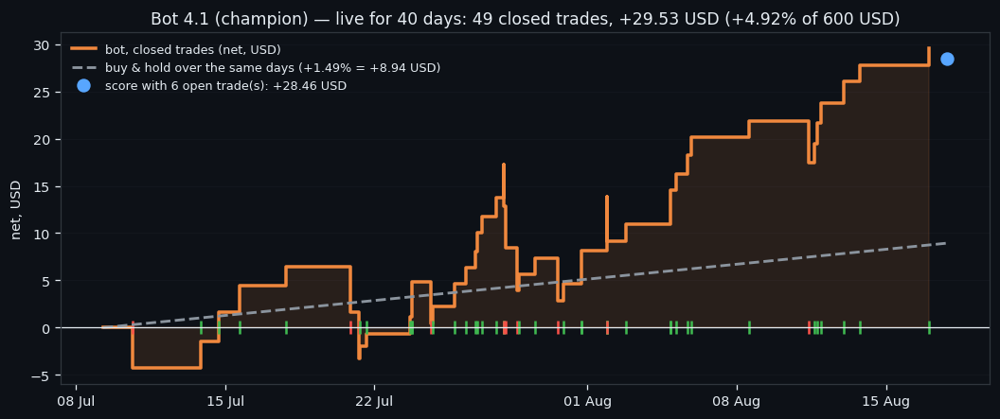
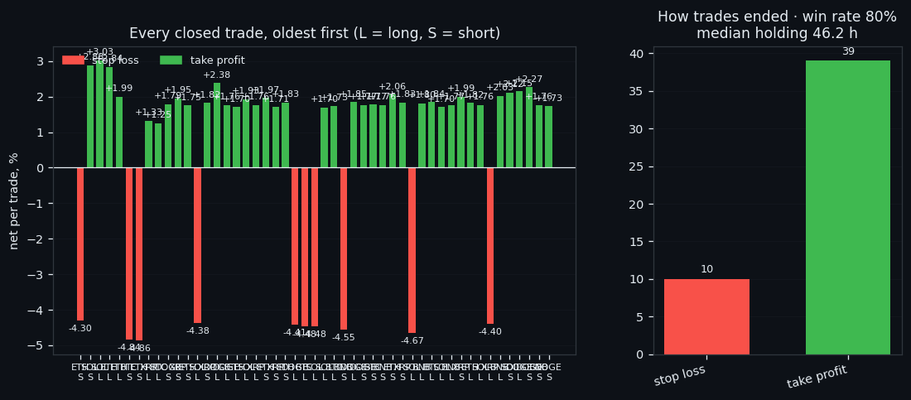
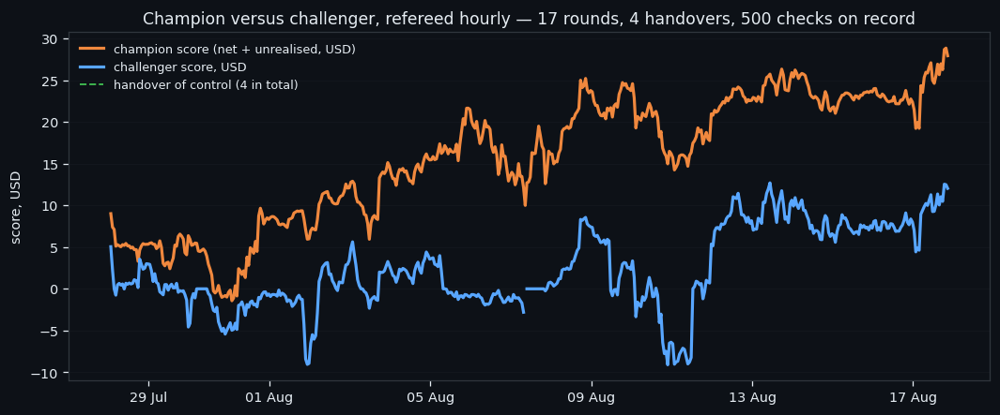

Bot 4: What Forty Days of Live Paper Trading Actually Look Like
In shortBot 4 has been trading live on paper since 09 July 2026 — 40 days, 49 closed trades, +29.53 USD on 600 USD of capital, a 80% win rate, against +1.49% on average for buying and holding the same coins. This is the full record: the rules it never deviates from, every closed trade, the open positions right now, and the hourly referee that can hand the account to a freshly trained challenger — which has happened 4 times so far.
Narrated walkthrough · plays from YouTube when you press play.
① The rules it has been playing by, unchanged
Bot 4 has been running on live market data since 09 July 2026 — no breaks, no manual entries, no discretion. It trades on paper: every fill is simulated at the price its own data feed sees, with a fee of 0.15% charged on both the entry and the exit. That is the honest way to describe it, and it is the first thing anyone reading a results table should know.
The rules it plays by have not changed since it was launched:
- six coins in parallel, each with its own slot of 100 USD (600 USD of capital in total), never more than one position per coin;
- entry only when four gates open at once — probability ≥ 0.55, expected value ≥ 0.002, both holding for 2 consecutive bars, plus an optional volatility floor the grid search left switched off;
- exit at take profit 2% or stop loss 4%, or when the 48-hour episode ends — and at the end of an episode the bot stays in whatever it was in, rather than forcing a sale at a bad moment;
- at most 12 entries a day, the house limit;
- entries pause automatically when the data feed is thin or lagging by more than 15 minutes, while exits keep working — a stop must never depend on a healthy feed.
The take profit is deliberately smaller than the stop loss. That is a standing rule here, not the output of an optimiser: the median 48-hour swing on these coins is 5.26%, so a 2% target is reachable often, while a 4% stop is far enough away that ordinary noise does not touch it. The bot wins small and often, and loses rarely and larger — which is exactly what the numbers below show.

② 40 days live: the numbers
As of 2026-08-17, after 40 days live:
| measure | value |
|---|---|
| closed trades | 49 |
| net result | +29.53 USD (+4.92% of 600 USD) |
| win rate | 79.6% |
| average trade | +0.603% · median +1.770% |
| median holding | 46.2 h |
| how they ended | stop loss — 10, take profit — 39 |
| best / worst | SOL +3.03% / ETH -4.86% |
| buy & hold, same days | +1.49% on average (BTC +3.7%, ETH +10.3%, SOL -1.6%, BNB +6.9%, XRP -7.9%, DOGE -2.6%) |
Open at the time of writing: DOGE long +1.38% after 20 h; BNB long -0.22% after 98 h; SOL long +0.41% after 113 h; XRP long -1.38% after 144 h; ETH long -0.20% after 247 h; BTC long -0.16% after 311 h — -1.07 USD unrealised in total. Counting those open positions at their current price, the running score is +28.46 USD.
Two readings of the same table, and both are true. The favourable one: the bot is ahead of buying and holding the same six coins over the same days, with a win rate near 80%, and it got there by taking small profits — the exits are dominated by take profits, not by lucky outliers.
The careful one, which we owe the reader. 49 trades is a small sample, and the distribution here is asymmetric by design: many small wins, few larger losses. Before this bot went live, the same configuration was tested offline across three random seeds and averaged -19.7 USD, spread from -53.2 to +8.8, against buy & hold at -18.3 — that is, the offline verdict was "no better than holding, with a wide spread". The live run is currently at the good end of that spread. Nothing in the last 40 days proves the offline test wrong; it is simply too early, and we will keep publishing the number either way.

③ Champion versus challenger, refereed hourly
The interesting part of Bot 4 is not the model — it is that the model is replaceable while running. Two copies trade side by side on the same live data: the champion, whose numbers are above, and a challenger trained on fresher data with a different take-profit/stop-loss geometry. A referee process compares them every hour on a single number: net result plus the value of everything still open.
The rule is deliberately hard to game: *control passes to the challenger only if its score beats the champion's by more than 1 USD, and only after it has been trading for at least 48 hours*. The margin stops a coin flip from taking over the account, and the 48-hour minimum stops a challenger that got lucky in its first hour.
Since launch: 17 challenger rounds, 4 handovers of control, 500 recorded comparisons. Each round trains a new challenger on fresh data with the next geometry in the rotation — TP1.5/SL4.5, TP2/SL4, TP2/SL6, TP3/SL3.75, TP3/SL4.5, TP3/SL9 — and the loser is archived rather than deleted, so every version that ever ran can still be inspected.
The current challenger has been live for 6 days with geometry TP3/SL9: 2 closed trades, +5.46 USD, win rate 100%, and 6 positions open, worth +6.98 USD unrealised. Its running score is +12.44 USD against the champion's +28.46.
Why build it this way at all? Because the honest conclusion of every offline test we have run is that the difference between two decent configurations is smaller than the noise between two random samples of days. If you cannot tell which is better on a backtest, the only remaining method is to let both trade the real feed and give control to whichever survives — slowly, with a margin, and in public. That is the whole design: not a bot that is right, but a bot that can be replaced without anyone touching it.

All our bots have been tested live. The best one is Line 7.
More than a dozen bots were built from this research. Line 7 — two small transformers that read 160 hours of order book as one picture — is the only one ahead of buy & hold in live trading: +5.44% since 5 Oct while BTC moved −5.29%. Every trade is in the report.
Everything on this site is research, not financial advice.
How to read this site in 5 minutes · All studies as one .md for AI · All research
← All research